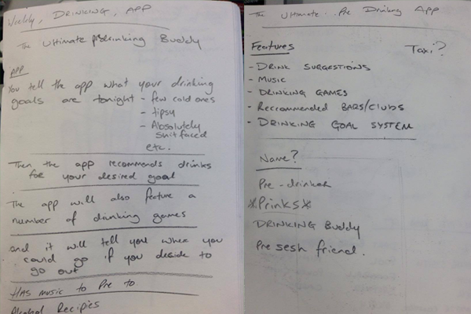
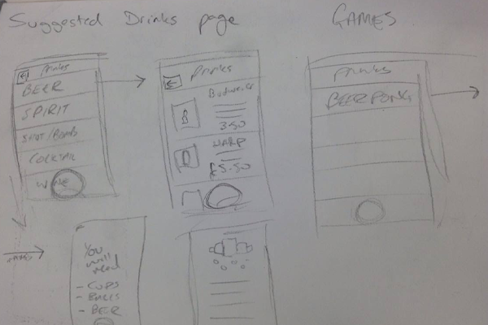
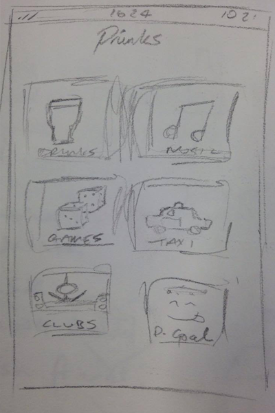
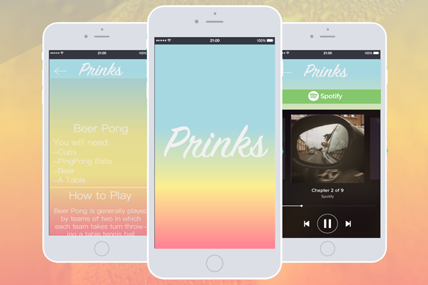
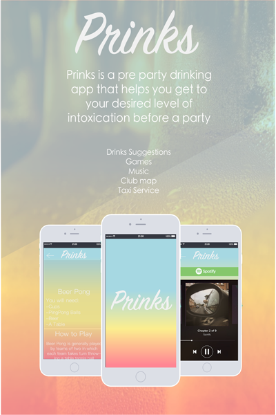

The Brief for this task was to create something new, we were given complete freedom with this task, the new product couldve been an physical product, a business idea, an app; whatever we wanted. I decided to go for the latter and designed 'Prinks'.
I had a few ideas for this task including a lazer finger pointer, but i decided to go for 'Prinks' a much more simple idea for students who like to go on nights out. The idea behind Prinks was that you would be saving money as a student I am always looking for ways to save money. Prinks is a Predrinking app filled with a whole load of features, including drinking games, music playlists, club locater and taxi services the aim of prinks is to start your night out before you go out, here are a few setches I drew.
  After getting my idea i decided to transfer it onto illustrator and start designing. This was the fun bit, this is the tyoe of work that I enjoy doing the most; Making pencil sketches into digital illustrations.
I also quickly made a poster to advertise the prinks app i made this to add a little bit of authenticity to the product.
